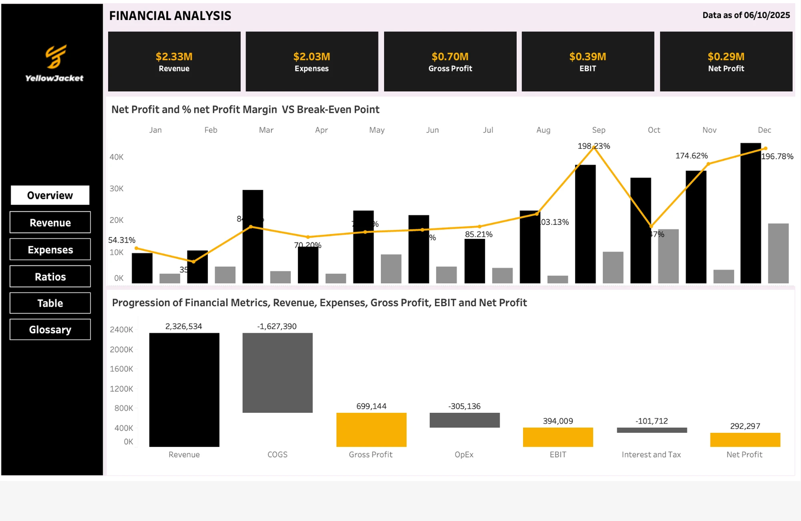
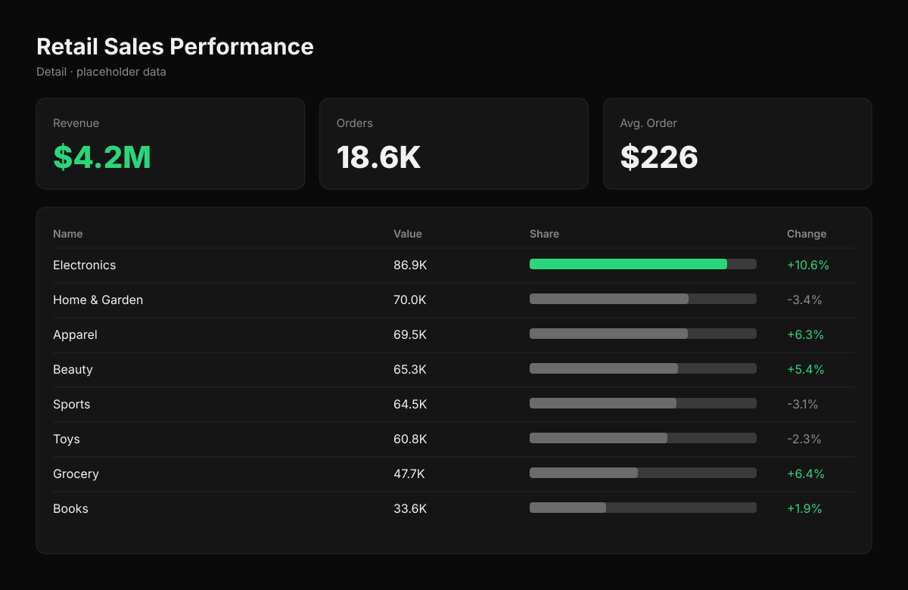
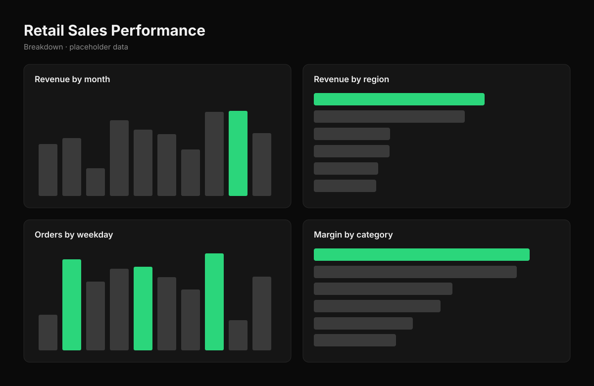
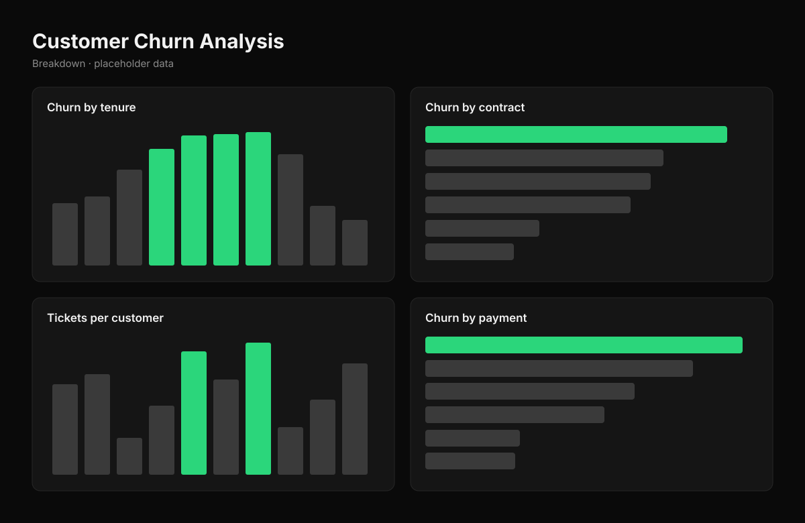
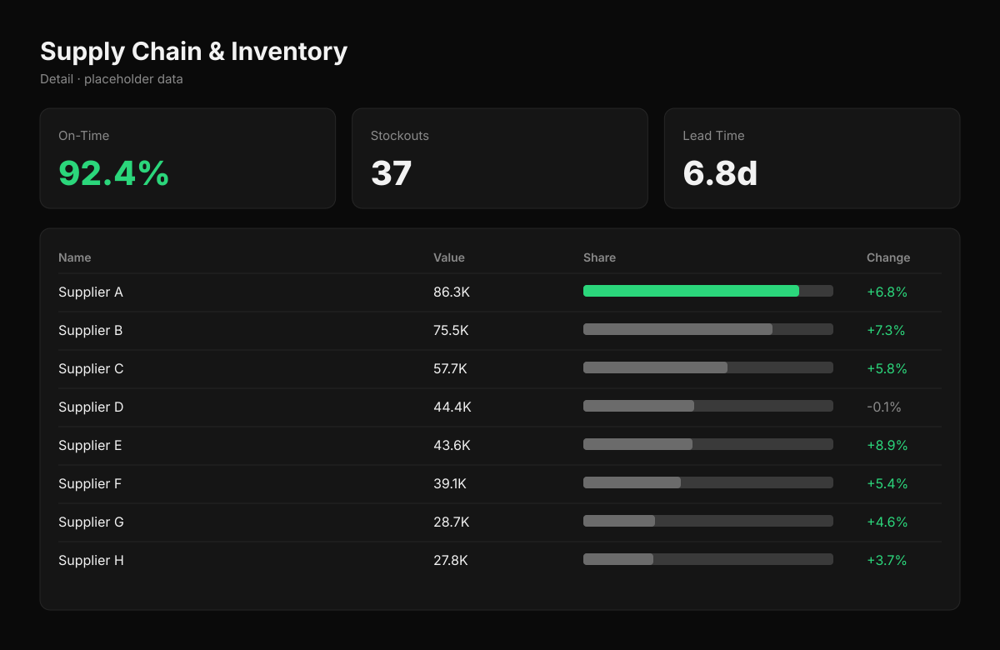
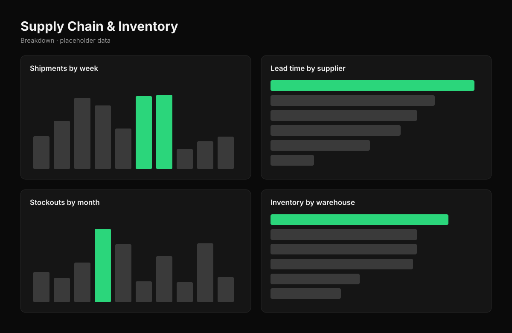

Advanced Tableau, since version 7
Parameter actions, complex LOD calculations and custom charts like Sankey, Pareto, waterfall and donut, with dashboards and their SQL tuned until they load fast.
Available for new projects 10+ yrs in BI Your time
Hi, I'm
I turn messy data into decisions people can actually act on.
A data analyst turning operational data into decisions leadership teams can act on.

Dashboards built for teams at
By the numbers
Enterprise dashboards for banking, human resource, healthcare, sport and e-commerce teams, from the first requirement to the last refresh.
About
I'm a data analyst passionate about helping businesses make sense of their data. I enjoy transforming complex, messy datasets into clear stories and actionable insights.
My focus is on building dashboards that get used, automating repetitive tasks to free up teams for more interesting problems, and creating models that help businesses plan for the future.
I love the "aha!" moment when data reveals something new and useful. When I'm not working with data, I enjoy watching football, reading, and trading the forex market.
What I deliver
Parameter actions, complex LOD calculations and custom charts like Sankey, Pareto, waterfall and donut, with dashboards and their SQL tuned until they load fast.
A former SQL developer: stored procedures, tables, views, materialized views and user-defined functions, plus query tuning that makes dashboards faster.
ETL workflows built in Alteryx and integrated with Python, so dashboards refresh themselves instead of being rebuilt by hand.
Complex row-level security using the hybrid method, so every user sees exactly the data they're entitled to, and nothing more.
Every project starts with the business users, and when there's no business analyst, I step into that role to turn their questions into clear KPIs.
Star and snowflake schemas with Type 2 slowly changing dimensions, so history stays accurate across fact and dimension tables. Connected with relationships, blending, joins and cross-database joins, and extended through Tableau's Python, JavaScript and Metadata APIs.
Projects
Four case studies, from finance to operations. Pick one to see the questions it answers.
4 case studies · tap a tab to explore
Financial analytics · Tableau



Retail analytics · SQL · Power BI



Customer analytics · Python · Power BI



Operations analytics · Excel · SQL · Power BI



Capabilities
Approach
Before any query runs, pin down the decision the analysis has to support.
Turn messy sources into one trustworthy model and documented, so it holds up for reuse.
One chart, one takeaway. Dashboards designed for the person reading them, not the person building them.
What the data showed, why it matters, what to do about it communicated in plain sentences to business users.
Experience
BNY Mellon · New York
Build Tableau and Power BI dashboards with row-level security, backed by tuned SQL and Alteryx and Python ETL pipelines.
American Express · Salt Lake City
Defined KPIs with directors and SMEs, published shared data sources, and tuned complex workbooks for performance.
Sheridan Healthcare · Atlanta
Migrated reports from Cognos, Power BI and MicroStrategy to Tableau, and automated extract refreshes with Alteryx and Python.